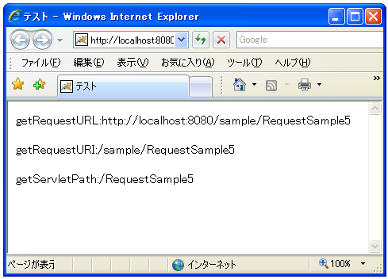

リクエストURI��得(getRequestURI)
サーブレットã�Œå‘¼ã�°ã‚Œã�Ÿæ™‚ã�®URIã‚’å�–å¾—ã�™ã‚‹æ–¹æ³•ã‚’確èª�ã�—ã�¾ã�™ã€‚(ã�Ÿã� ã�—ã€�ã�“ã�“ã�§URIã‚„URLã�¨èªã‚“ã�§ã�„ã‚‹ã‚‚ã�®ã�¯ä¸€èˆ¬çš„ã�«è¨€ã‚�ã‚Œã�¦ã�„ã‚‹å�³å¯†ã�ªã‚‚ã�®ã�¨ã�¯è‹¥å¹²ç•°ã�ªã‚Šã�¾ã�™)。
リクエスト�URIを�得�る��「HttpServletRequest�インターフェース�定義�れ��る「getRequestURI�メソッドを使���。
getRequestURI public java.lang.String getRequestURI()
Returns the part of this request's URL from the protocol name up to the
query string in the first line of the HTTP request. The web container
does not decode this String. For example:
First line of HTTP request Returned Value
------------------------------------------------------
POST /some/path.html HTTP/1.1 /some/path.html
GET http://foo.bar/a.html HTTP/1.0 /a.html
HEAD /xyz?a=b HTTP/1.1 /xyz
To reconstruct an URL with a scheme and host, use
HttpUtils.getRequestURL(javax.servlet.http.HttpServletRequest).
Returns:
a String containing the part of the URL from the protocol name up
to the query string
ã�“ã�®ãƒ¡ã‚½ãƒƒãƒ‰ã�§ã�¯ã€�リクエストã�«å�«ã�¾ã‚Œã‚‹ãƒ�ート番å�·ã�¨ãƒ‘ラメータã�®é–“ã�®éƒ¨åˆ†ã‚’å�–得出æ�¥ã�¾ã�™ã€‚ã�¤ã�¾ã‚Šã‚³ãƒ³ãƒ†ã‚ストパス＋サーブレットパスã�®éƒ¨åˆ†ã�§ã�™ã€‚
ã�¾ã�Ÿãƒªã‚¯ã‚¨ã‚¹ãƒˆã�®ä¸ã�®ã‚µãƒ¼ãƒ–レットå��ã� ã�‘を知りã�Ÿã�„å ´å�ˆã�«ã�¯ã€ŒgetServletPathã€�メソッドを使ã�„ã�¾ã�™ã€‚
getServletPath public java.lang.String getServletPath()
Returns the part of this request's URL that calls the servlet. This path
starts with a "/" character and includes either the servlet name or a
path to the servlet, but does not include any extra path information or
a query string. Same as the value of the CGI variable SCRIPT_NAME.
This method will return an empty string ("") if the servlet used to process
this request was matched using the "/*" pattern.
Returns:
a String containing the name or path of the servlet being called, as
specified in the request URL, decoded, or an empty string if the servlet
used to process the request is matched using the "/*" pattern.
��メソッド��サーブレットパス�部分��を�得����。
ã�¾ã�ŸURLã��ã�®ã‚‚ã�®ã‚’å�–å¾—ã�—ã�Ÿã�„å ´å�ˆã�«ã�¯ã€ŒgetRequestURLã€�メソッドを使ã�„ã�¾ã�™ã€‚
getRequestURL public java.lang.StringBuffer getRequestURL()
Reconstructs the URL the client used to make the request. The returned URL contains a protocol, server name, port number, and server path, but it does not include query string parameters. Because this method returns a StringBuffer, not a string, you can modify the URL easily, for example, to append query parameters. This method is useful for creating redirect messages and for reporting errors. Returns: a StringBuffer object containing the reconstructed URL
ã�“ã�®ãƒ¡ã‚½ãƒƒãƒ‰ã�®å ´å�ˆã�¯URLå½¢å¼�ã�§å�–å¾—ã�Œå‡ºæ�¥ã�¾ã�™ã€‚ã�Ÿã� ã�—ã€�ã�“ã�®ãƒ¡ã‚½ãƒƒãƒ‰ã�§ã‚‚クエリー文å—列ã�®ãƒ‘ラメータ部分ã�¯å�–å¾—ã�•ã‚Œã�¾ã�›ã‚“。ã�¾ã�Ÿæˆ»ã‚Šå€¤ã�ŒStringBufferクラスã�®ã‚ªãƒ–ジェクトã�«ã�ªã�£ã�¦ã�„ã�¾ã�™ã�®ã�§æ³¨æ„�ã�Œå¿…è¦�ã�§ã�™ã€‚
サンプルプãƒã‚°ãƒ©ãƒ
��簡��サンプル�試��見��。
今å›�ã�¯ã‚µãƒ¼ãƒ–レットを直æ�¥å‘¼ã�³å‡ºã�—ã�¦ãƒªã‚¯ã‚¨ã‚¹ãƒˆã�‹ã‚‰å�„ç¨®æƒ…å ±ã‚’å�–り出ã�—ã�¦ã�¿ã�¾ã�™ã€‚
import java.io.*;
import javax.servlet.*;
import javax.servlet.http.*;
public class RequestSample5 extends HttpServlet {
public void doGet(HttpServletRequest request, HttpServletResponse response)
throws IOException, ServletException{
response.setContentType("text/html;charset=Shift_JIS");
PrintWriter out = response.getWriter();
StringBuffer sb = new StringBuffer();
sb.append("<html>");
sb.append("<head>");
sb.append("<title>テスト</title>");
sb.append("</head>");
sb.append("<body>");
sb.append("<p>");
sb.append("getRequestURL:");
sb.append(new String(request.getRequestURL()));
sb.append("</p>");
sb.append("<p>");
sb.append("getRequestURI:");
sb.append(request.getRequestURI());
sb.append("</p>");
sb.append("<p>");
sb.append("getServletPath:");
sb.append(request.getServletPath());
sb.append("</p>");
sb.append("</body>");
sb.append("</html>");
out.println(new String(sb));
out.close();
}
}
サンプルプãƒã‚°ãƒ©ãƒ をコンパイルã�—ã�¦ä½œæˆ�ã�—ã�Ÿã€ŒRequestSample5.classã€�ファイルを別途作æˆ�ã�—ã�Ÿã€Œweb.xmlã€�ファイルを次ã�®ã‚ˆã�†ã�«é…�ç½®ã�—ã�¾ã�™ã€‚
D:¥ -- servlet-sample
|
+-- WEB-INF
|
+-- (web.xml)
|
+-- classes
|
+-- (RequestSample5.class)
web.xmlファイル�次�よ���り��。
<?xml version="1.0" encoding="ISO-8859-1"?>
<web-app xmlns="http://java.sun.com/xml/ns/j2ee"
xmlns:xsi="http://www.w3.org/2001/XMLSchema-instance"
xsi:schemaLocation="http://java.sun.com/xml/ns/j2ee
http://java.sun.com/xml/ns/j2ee/web-app_2_4.xsd"
version="2.4">
<servlet>
<servlet-name>RequestSample5</servlet-name>
<servlet-class>RequestSample5</servlet-class>
</servlet>
<servlet-mapping>
<servlet-name>RequestSample5</servlet-name>
<url-pattern>/RequestSample5</url-pattern>
</servlet-mapping>
</web-app>
コンテã‚ストファイルを作æˆ�ã�—「(Tomcatをインストールã�—ã�Ÿãƒ‡ã‚£ãƒ¬ã‚¯ãƒˆãƒª)¥Tomcat 5.5¥conf¥Catalina¥localhost¥ã€�ディレクトリã�«ã€Œsample.xmlã€�ファイルã�¨ã�—ã�¦ä¿�å˜ã�—ã�¾ã�™ã€‚内容ã�¯ä»¥ä¸‹ã�®é€šã‚Šã�§ã�™ã€‚
<Context path="/sample" docBase="d:/servlet-sample/sample"> </Context>
準備�以上��。��Tomcatを�起動���ら「http://localhost:8080/sample/RequestSample5��ブラウザ�アクセス��下��。

呼ã�³å‡ºã�•ã‚Œã�Ÿãƒªã‚¯ã‚¨ã‚¹ãƒˆã�‹ã‚‰ã‚µãƒ¼ãƒ–レットå��ã‚’å�–り出ã�—ã�¦è‡ªå‹•çš„ã�«ãƒªãƒ³ã‚¯å…ˆã‚’作æˆ�ã�™ã‚‹å ´å�ˆã�ªã�©ã�«ä½¿ã�„ã�¾ã�™ã€‚
( Written by Tatsuo Ikura )

著者 / TATSUO IKURA
åˆ�心者ï½�ä¸ç´šè€…ã�®æ–¹ã‚’対象ã�¨ã�—ã�Ÿãƒ—ãƒã‚°ãƒ©ãƒŸãƒ³ã‚°æ–¹æ³•ã‚„開発環境ã�®æ§‹ç¯‰ã�®è§£èª¬ã‚’è¡Œã�†ã‚µã‚¤ãƒˆã�®é�‹å–¶ã‚’è¡Œã�£ã�¦ã�„ã�¾ã�™ã€‚